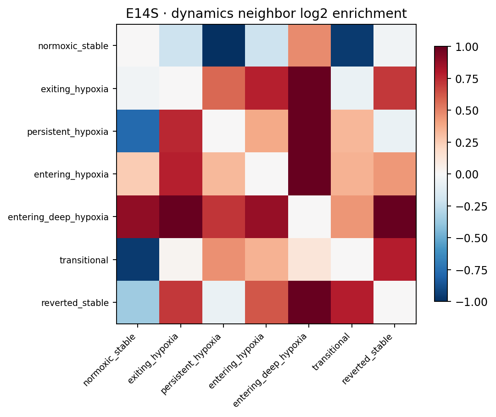
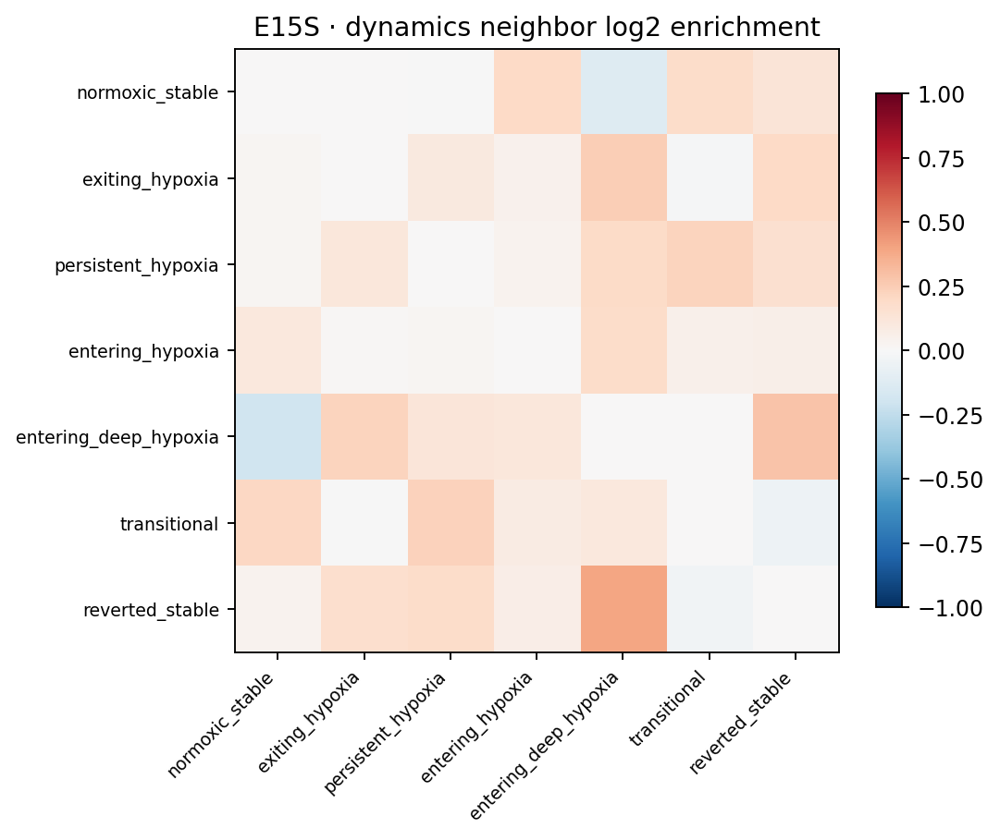
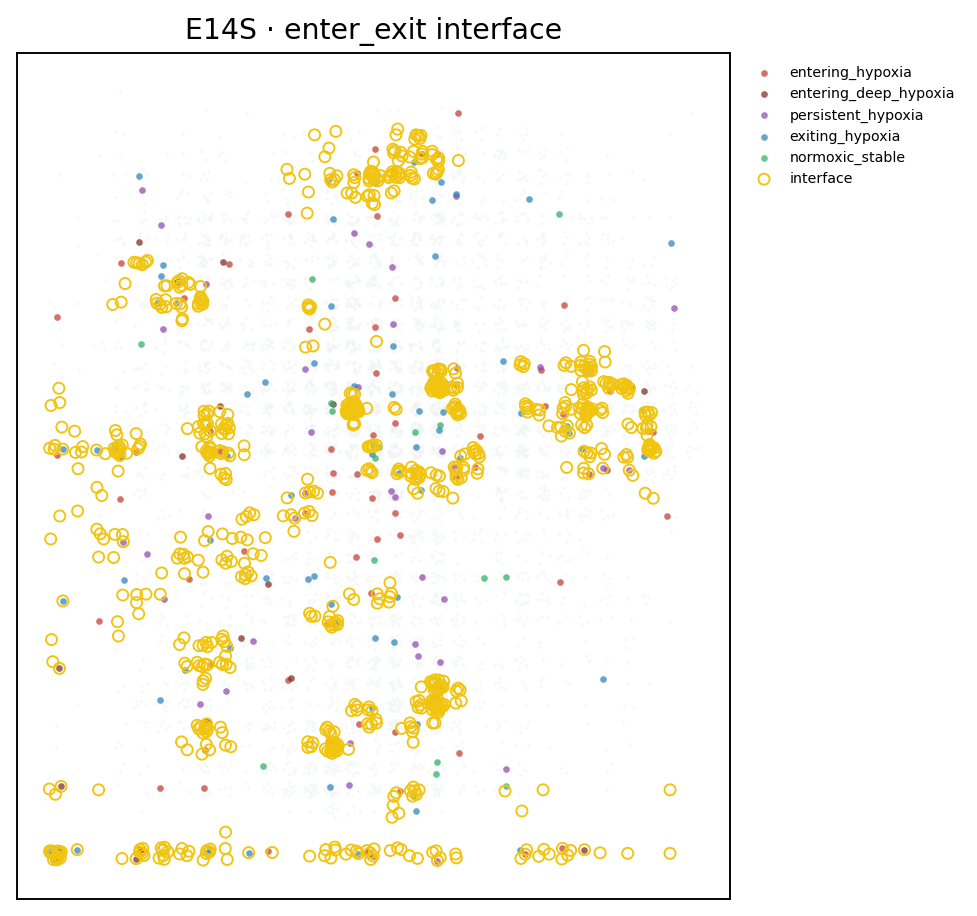
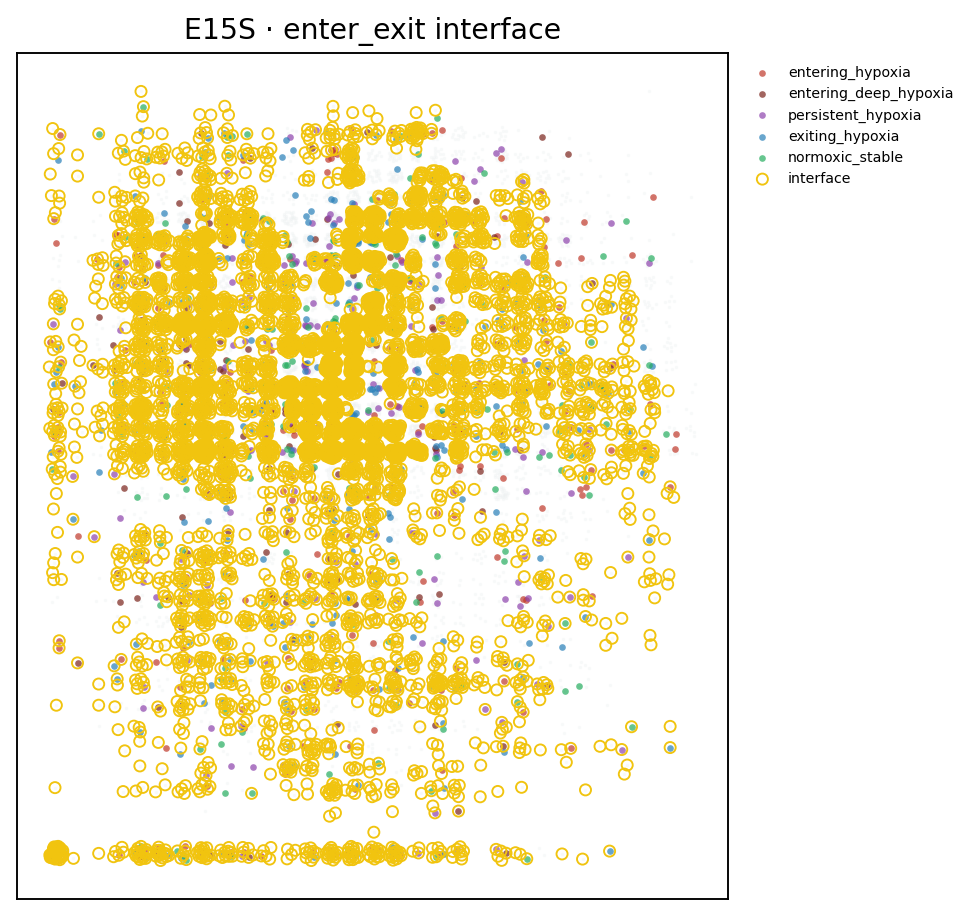
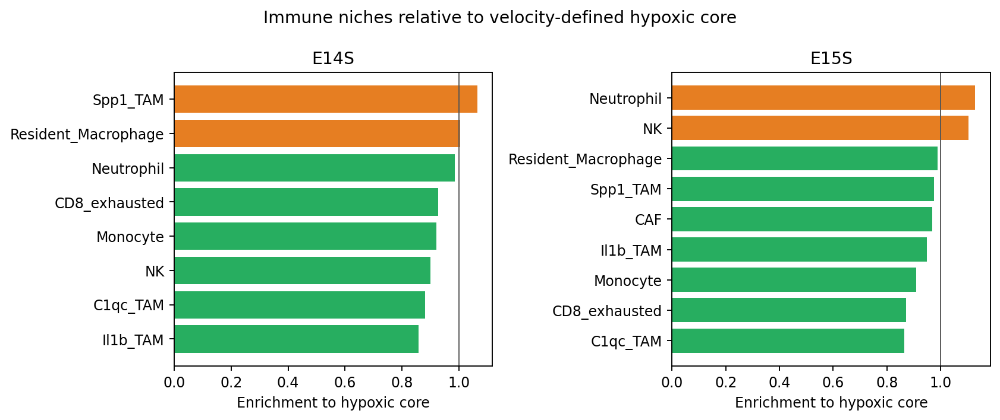
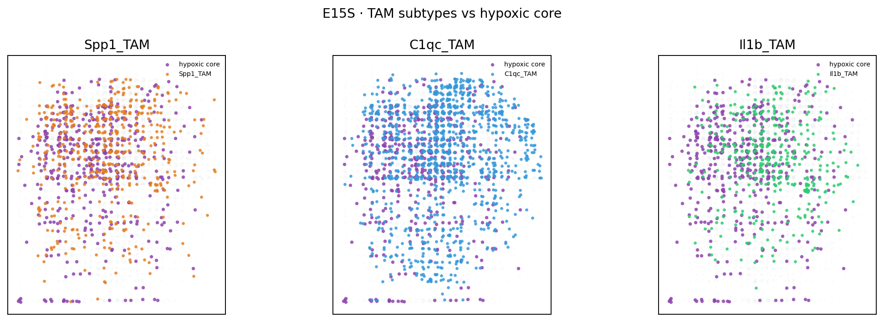
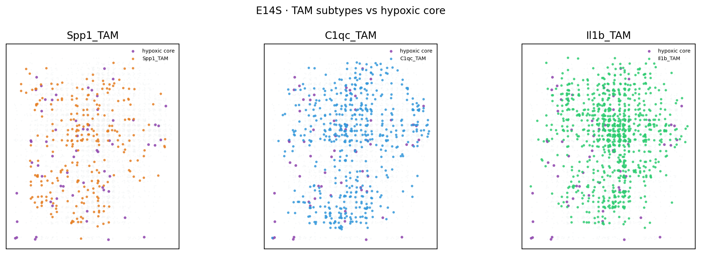
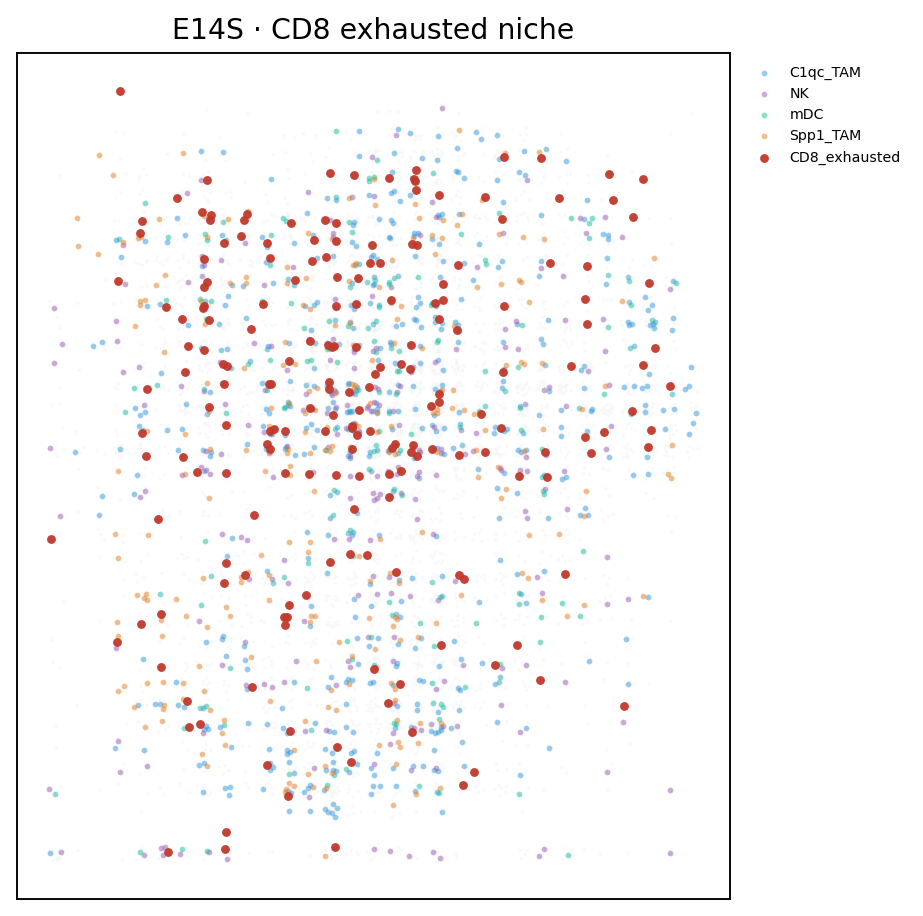

Top niches
1. Enter↔exit continuum fronts.
In E14S, entering_deep neighbors of exiting cells are enriched 2.85× (perm p≈0.002);
entering↔exiting 1.71×; persistent↔exiting 1.69×.
E15S shows the same deep↔exit adjacency at 1.17× (p≈0.002). Hypoxia dynamics form contiguous fronts, not scattered pockets.
2. C1qc TAM exclusion from hypoxic cores.
Neighbor enrichment to velocity-defined core (persistent + entering_deep):
E15S 0.86× (p≈0.002), E14S 0.88× (trend).
Distance to core is also elevated in E15S (ratio vs background 1.38).
Il1b TAMs trend the same way. Phagocytic/inflammatory TAMs sit outside the core.
3. Neutrophil–core coupling on the tumor face (E15S).
Neutrophils enriched at the hypoxic core 1.13× (p≈0.002) and at entering_deep neighborhoods 1.18×.
Absent in immune-hot E14S — niche is microenvironmental context dependent.
4. CD8 exhausted hub avoids hypoxia entry (E14S).
CD8s enrich near T-helper / mDC / NK (immune synapse neighborhood) but are
depleted near entering hypoxia (0.74×, p≈0.017).
Enter–exit interface cells are enriched for Hypoxic Tumor and NK.
2.85×
E14S deep↔exit adjacency
0.86×
E15S C1qc vs core
1.18×
E15S neutrophils at enter-deep
0.74×
E14S CD8 near entering
Dynamics geography




Who sits by the core?



| Cell | E14S core enr | E15S core enr | Note |
|---|---|---|---|
| C1qc TAM | 0.88 | 0.86 ★ | Excluded from core |
| Il1b TAM | 0.86 | 0.95 | Excluded / trend |
| Spp1 TAM | 1.07 | 0.97 | Neutral |
| Neutrophil | 0.99 | 1.13 ★ | Core-associated in E15S |
| Monocyte | 0.92 | 0.91 ★ | Excluded |
| CD8 exhausted | 0.93 | 0.87 | Away from core |
CD8 niche (E14S immune face)

How to read this
- E14S and E15S are complementary faces of one experiment — niches that replicate (deep↔exit fronts; C1qc exclusion direction) are strongest.
- Neutrophil–core coupling is E15S-specific (tumor/stroma core); don’t over-generalize to E14S.
- Enrichments are kNN neighbor obs/exp with label-shuffle permutation tests.
- Pairs with classical entry≠exit transcriptional asymmetry: the spatial front is where ISR-entry and OXPHOS-exit programs physically abut.